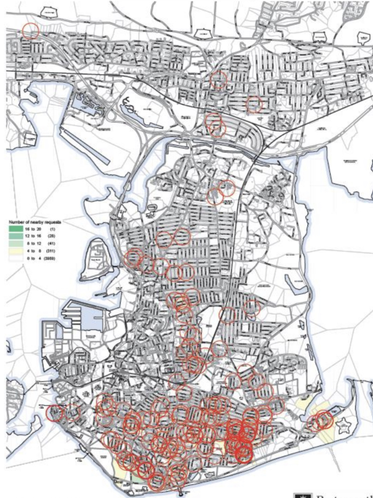

As we have often stated in support of creating better cycling facilities in the city, Portsmouth is a flat, compact and temperate city that lends itself superbly well to cycling for all types of journeys. If only there was suitable infrastructure....
The majority of our time as a campaign is spent trying to persuade people to create the safe, direct, connected network of segregated lanes and tracks that other cities have and which aids more people to cycle further and more often.
However, cycle security and parking spaces are clearly the second most important aspect of this. No-one wants to commit to cycling if they are constantly concerned about where and how their precious two-wheeled steed will be parked when it is not being used. This is especially true in residential areas where there are few off road spaces to store a bike at home without dragging through the house or having to store it in the living room or hall of a flat or house share.
So the launch of a trial scheme to install nine on-road bike hangers - one of those was a quick addition after a road was so heavily subscribed it could fill a second unit - in March 2021 and was particularly welcomed by PCF members and committee, as it had been a long time coming, and in fact was a direct result from the launch of our #ACityToShare strategy in November 2014.
Eric de Greef fills in the background, “I went through my emails to find out when I first asked the council about introducing bike hangars in Portsmouth. It went back as far as 2015 when I exchanged emails with the relevant city council officers at the time. I linked it with the University of Portsmouth’s Cycle to Work scheme, saying that for cycling to be convenient you need safe and convenient storage at your destination as well as at home, on top of a safe journey. It never really got any further, I didn’t follow up, and I think my contacts left PCC for pastures new shortly afterwards. It wasn’t until 2018 that I raised it again, after a friend of mine had similar correspondence with PCC. Again, I suspected some staff turnover at PCC, but eventually Jo Hamment had the bit between her teeth and progressed with it and they were installed just before the 2021 local elections.”

As someone who had made previous requests of the council, Eric was on the list to be approached to have one installed in his Southsea road. In July we caught up with him to find out how the first few months were going.
“It’s simply brilliant for us. Our two bikes are dry, secure, right outside our house, and bikes of four other residents are locked in our hangar; one lives about 35 houses down the road. Compared to hangars I have seen elsewhere in Portsmouth (there is a range of different designs) the one outside our house is the most aesthetically pleasing. It takes a little effort to bring the cover down, but we manage fine. The only design issue is that within a few months the cover for the keyhole has come off. I messaged CycleHoops who operate the system but they don’t respond to emails. Another issue that could be improved.”
Another PCF member, Laura Trowen also lives in Southsea and secured space in a different hanger. “I got in contact with the council and requested hangars in September 2019 when, as a family, we went car free. I was thrilled to have one installed outside our house. I was consulted as to where I would like the hangar located. The company has been very helpful and customised it as they installed it. I use 2 non-standard bikes (Elephant bike and a Biria), neither of which were found to fit into the mounts that they had arrived with. They customised it by removing one mount so that I could get the elephant bike in, and are modifying a part so that I will have a point to which I can lock it inside the hangar. Overall the service from Cycle Works has been fantastic.
“It’s made such a difference to cycling everyday, especially with children. I would say it’s doubled the amount of journeys I make by bike, just because it’s so much more accessible. I currently have a 8 year old and a 2 year old, and trying to get my bike (plus child seat) through the terraced house has not been easy up till now. It is so much simpler and quicker to access my bike now, and I find I am using it even more for short journeys, because it is quicker - and I don’t have to rearrange the dining room to get bikes through the house.”
As with many issues around active travel, there is often a negative backlash to the changes proposed, so how have the hangers been received by neighbours?
“It’s had such a positive influence, and I have had many positive comments from some neighbours and many passers-by,” says Laura. “Lots of people stop to ask what it is ,or ask for a look inside. Others have enquired if they can also get one and I would estimate I’ve had 10 positive comments about the installation for every negative one. I am thrilled by the response I had on social media as well.” Eric agrees with the pulling power of social media, “ahead of the council elections Gerald Vernon Jackson was out with his Lib Dem councillors and tweeted a picture of our hangar, and Labour candidate Paula Savage actually had her Facebook profile picture taken with our hangar in the background. I have only heard positive reactions from neighbours, they think it looks solid and secure, a good solution for people who like to cycle, and there is general support to have more of these in our street. Exactly what I hoped this trial would achieve: create a snowball of demand for on road secure cycle storage.”
So after four or five months experiencing how they are used for everyday life, do our trialists feel this is a scheme worth persevering with? Laura is extremely positive, “I’d be delighted to see more hangars across the city, it’s such a simple way to make cycling more accessible.”
Eric thinks another 2 or 3 hangars in his street alone is possible, and links this to a way of changing transport in the city. “If you extrapolate that across the rest of Portsmouth that would mean hundreds more bike hangers. Cycling would suddenly have a much increased presence on Portsmouth roads. They could be integrated in traffic calming road designs, or we could extend the trials on the existing roads by marking cycle spaces to remind motorists of the need to share the roads with cyclists. It would be a bold political statement and I hope that our progressive parties take the lead on this.”
It would seem that Eric’s enthusiasm was justified, as after launching the scheme the council asked residents to register their interest in taking a space in any future hangers installed as a result of a successful trial. 190 requests were subsequently received in the next six months, a rate of around one per day. The image below shows the geographic spread of those requests. It’s no surprise that the flat fronted terraced roads in the south of the city were the most popular locations.

On November 2nd 2021, the City Council cabinet made the decision to make the initial trial locations permanent, and also approved expenditure on another eight hangers for a list of roads that were based on residents requests and an assessment of the degree to which the following criteria were met:
- Located within high density residential area of Portsmouth
- Requested by local residents or Cllrs/Portfolio Holder etc.
- Accommodation on road predominantly without easy access e.g. flat fronted terrace, flats
In addition, another eight streets have been identified using the same process and funding will be sought to be able to install those as soon as possible. From now on there is an annual charge of £30 per space in a hanger - an equivalent cost to the first residents’ parking permit per property - to contribute towards the costs of installing and maintaining it.
PCF’s belief is that based on the costs associated to the installing the new locations, this pricing would mean that for every 21 fully utilised hangers would bring in enough income to install another hanger, so once there are enough in the city, they will effectively become self funding to continue to extend the scheme. Brighton council has recently announced plans to install one hundred of them.
This project has demonstrated an appetite from residents for on-street cycle infrastructure. We can only hope that further roll out results in more people cycling more often, and the arguments against creating better, safer infrastructure for people to use becomes stronger, and thus a virtuous circle is created, and like a wheel it keeps on turning….

More information about the PCC bike hangers and how to request one for your own road can be found here: https://travel.portsmouth.gov.uk/schemes/bikehangars/
The Spring 2021 trial locations:
- Manners Road
- Lucknow Street
- Eastfield Road
- Addison Road x2
- Hunter Road
- Clarence Road
- Guildford Road
- Sultan Road
The Autumn 2021 extension:
- Methuen Road
- Worsley Street
- Binsteed Road
- Lennox Road South
- Collingwood Road
- Lumsden/Ferry Road
- Landguard Road
- Francis Avenue